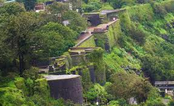
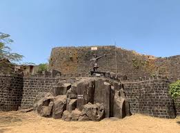
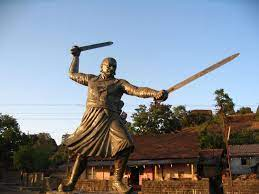
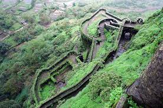

Panhala Fort
   
Panhala fort (also known as Panhalgad and Panhalla (literally "the home of serpents")), is located in Panhala, 20 kilometres northwest of
Kolhapur in Maharashtra, India. It is strategically located looking over a pass in the Sahyadri mountain range which was a major trade route
from Bijapur in the interior of Maharashtra to the coastal areas.[1] Due to its strategic location, it was the centre of several skirmishes
in the Deccan involving the Marathas, the Mughals and the British East India Company, the most notable being the Battle of Pavan Khind. Here,
the queen regent of Kolhapur, Tarabai, spent her formative years.
Several parts of the fort and the structures within are still intact. It is also called as the 'Fort of Snakes' as it is zigzagged in shape.
Video Link
Directions to the Panhala Fort